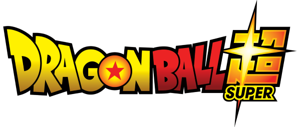
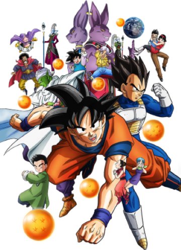

Dragon Ball Super é um novo arco de anime e mangá da franquia criada pelo lendário Akira Toriyama. A trama tanto do anime como do mangá é uma sequência de Dragon Ball Z, oferecendo assim aos fãs uma continuação da história de Goku e amigos passados quase 18 anos das últimas aventuras.